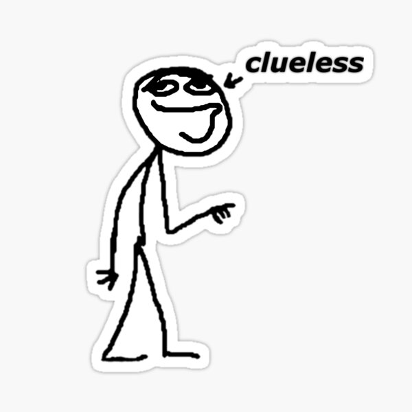
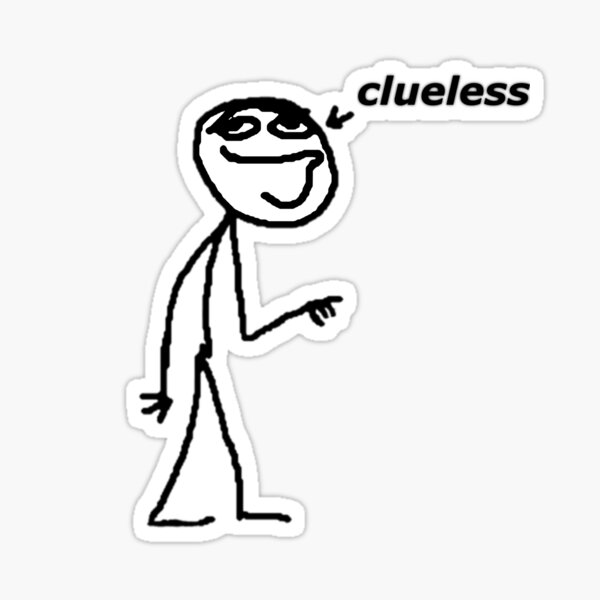
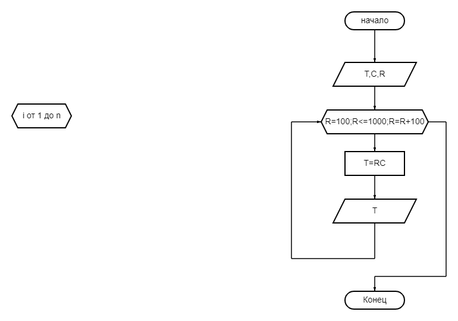

- Лыжи
- Коньки
- Скейтборд
- -Плавание
- -Загорание
- -Походы
- a)Грибы
- b)Рыбалка
- c)Картошка
 

Экзаменационные вопросы, курс "Организация ЭВМ и ВС", 2014 Теоретические вопросы (1,2 вопрос билета) 1. Системы счисления. Их виды. Способы записи чисел. 2. Правила перевода чисел из одной системы счисления в другую. Перевод чисел из 2-й в 10-ю СС. 3. Принципы фон Неймана. Представление информации в ЭВМ. 4. Представление чисел в обратном и дополнительном коде. Представление чисел в 2-10-м коде. 5. Способы умножения чисел. Способы табличного и модульного умножения. 6. Представление команд в ЭВМ. 7. История ВТ. Поколения ЭВМ. 8. Алгоритм. Свойства алгоритма. Принципы программного управления фон Ней-мана. 9. Принцип программного управления. Принцип хранимой в памяти программы. 10. Форматы команд. 11. Способы адресации команд. 12. Классификация ЭВМ . Основные характеристики ЭВМ 13. Уровни организации ЭВМ. Устройство компьютера. Периферийные устройства. 14. Характеристики процессора 15. Системный блок. Корпуса. Блок питания. Кабели и разъемы. Проводники. 16. Системная плата и чипсет. 17. Винчестеры. Цифровая информация. Флоппи диски (FDD). Прочие накопители. Накопитель на компакт дисках. 18. Внешние интерфейсы подключения к материнской плате  19. Основные характеристики материнской платы 20. Основные характеристики ОЗУ 21. Видеоподсистема – технология вывода изображения. ЭЛТ, ЖК – мониторы. 22. Видеоадаптеры. Проблемы цветопередачи. Карты нелинейного видеомонтажа. 23. Кодирование графической информации в компьютере 24. Средства отображения информации 25. Основные виды и характеристики видеокарт 26. Логические элементы. Триггеры. 27. Представление числовых данных в ЭВМ. 28. Кодирование текстовых данных в ЭВМ. 29. Кодирование графических данных в ЭВМ. 30. Алгебра логики. Основные законы и тождества. 31. Минимизация логических функций с помощью алгебры логики. 32. Минимизация логических функций с помощью диаграмм Вейча 33. Устройство и принцип действия персонального компьютера 34. Устройство и принцип действия процессора 35. Основные блоки компьютера, их состав и характеристики. 36. Система прерываний и приостановок, состояние процессора. 37. Система ввода-вывода ЭВМ. Канальная и шинная организация. 38. Устройства ввода знаковых данных. Устройства командного управления. 39. Устройства ввода графических данных. 40. Устройства вывода данных. 41. Основная память компьютера. Основные характеристики 42. Накопители на жестких магнитных дисках. 43. Raid- массивы 44. Уровни Raid- массивов 45. Ассоциативные запоминающие устройства 46. Накопители на оптических дисках. Флеш-память, регистровая кэш-память 47. Виртуальная память. Страничная организация, сегментация памяти 48. Устройства обмена данными. 49. Интерфейсы SCSI 50. Интерфейсы RS-232C 51. Интерфейсы USB 52. Интерфейсы IEEE 1284, 1394 53. Принцип работы сетей Wi-Fi, Bluetooth 54. Назначение и классификация компьютерных сетей. 55. Характеристика процесса передачи данных. Протоколы компьютерной сети 56. Локальные вычислительные сети 57. Типовые топологии и методы доступа ЛВС 58. Объединение ЛВС. Способы объединения ЛВС 59. Структура Internet. Система адресации в Internet.
| Мои увлечения | ||
|---|---|---|
| Зима |
|
|
| Лето |
|
|
| Осень |
|
|